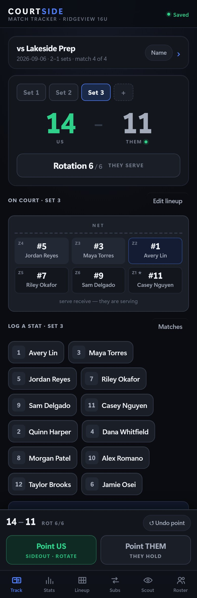
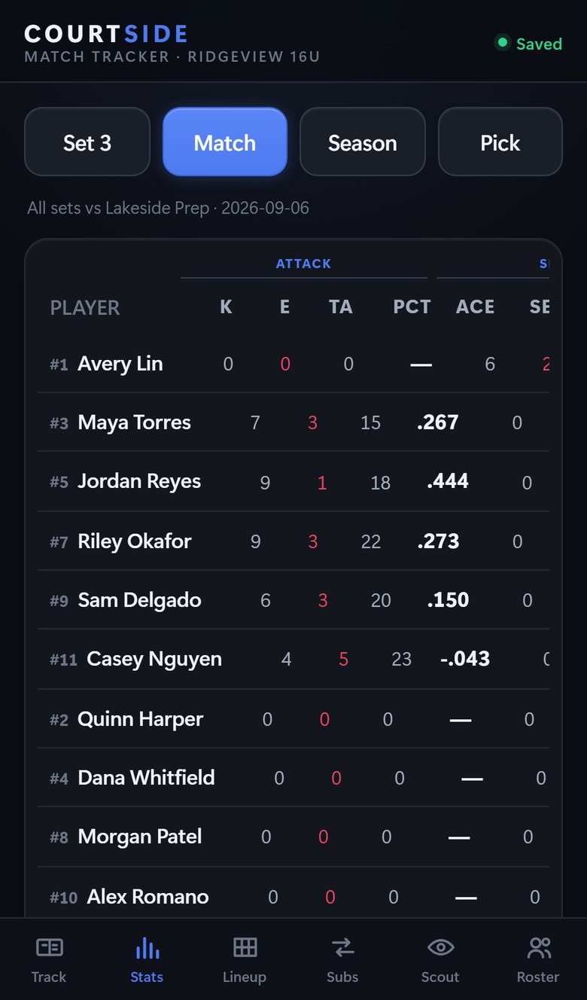
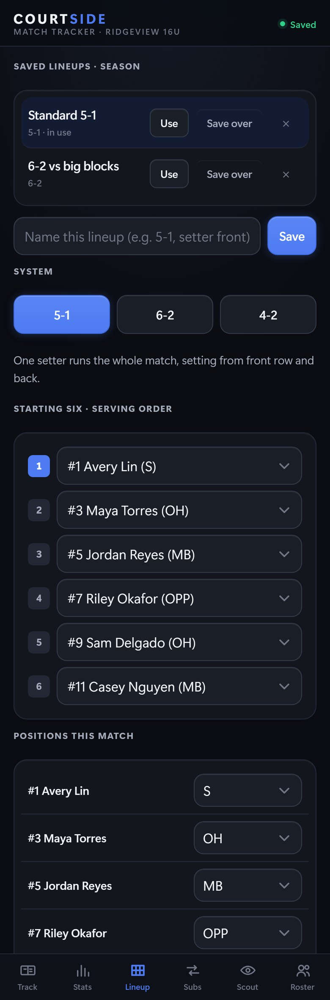

Phone app · installable, offline · in use since August 2026
Courtside is a match tracker a coach runs with one thumb.
A volleyball coach on the bench is keeping score, working out which of six rotations the team is in, counting substitutions against a per-set limit, and trying to remember who just got the kill. Courtside does all of that from one phone with no signal, and it shows the coach where everyone should be standing. I built it for a youth club's coaching staff, and they use it.



What it does
- The Season tab keeps every match. Starting a new one never touches the last one, and switching between them is one tap on the match bar.
- On Track you tap Point US or Point THEM every rally. Sideout scoring is implemented exactly as the rules have it: you rotate only when you win a rally you were not serving. I verified it for all six rotations.
- Stats is a full box score with the attempts behind every percentage. The pass average is broken into how many passes graded each way, so a 2.4 is not a mystery.
- Lineup and Subs hold the system in use, positions for this match, and the substitution count against the limit. The live lineup updates as subs go in, so the diagram stays truthful.
- Scout keeps an opponent card per team, with key players, their tendencies and free notes, season to season.
- Roster holds names, numbers and positions, and writes a JSON backup that moves between phones.
Change requests from inside the app
The coach can ask for a change from inside the app, in his own words. The request becomes a work item, gets built and tested automatically, and the reply comes back to the same screen he typed on, with the app updated on his phone. Since August the club's coach has commissioned features this way without messaging me once. The most recent one, an opponent scope on the stats table so he can total every match against the same team, shipped on September 6. The panel is visible in the public app but does nothing without the coach's access code.
How it is built
- It is one HTML file of plain JavaScript, with no framework and no build step. It runs from a static host and installs as a progressive web app on iPhone and Android.
- Every tap is written to local storage at once and mirrored to IndexedDB, so a crash mid-rally loses nothing and a wiped browser store restores from the mirror. I tested that by wiping it.
- The deployed page ships with a generic roster. Real names are typed once on the Roster tab and live only on that phone, so a public page never carries a team's players.
- A browser test suite of one hundred assertions covers the scoring rules, the rotation arithmetic, the statistics, persistence and the backup format.
It shares its whole design system with Pass Chart, down to the palette, type scale and components, so a coach who knows one knows both.